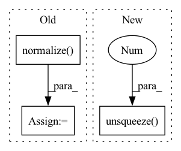

Pattern ID :9311
Before Change
if hasattr(params, "augmentation"):
wavs = params.augmentation(wavs, wav_lens, init_params)
feats = params.compute_features(wavs, init_params)
feats = params.normalize( feats, wav_lens)
out = params.model(feats, init_params)
out = params.output(out, init_params)
pout = params.log_softmax(out)
return pout, wav_lensAfter Change
// feats = params.normalize(feats, wav_lens)
out = params.model(feats, init_params)
out = params.output(out, init_params)
out = out - out.mean(1).unsqueeze(1 )
pout = params.log_softmax(out)
return pout, wav_lens
def compute_objectives(self, predictions, targets, stage="train"):In pattern: SUPERPATTERN
Frequency: 4
Non-data size: 3
Instances Fragment ID: 33437534
Project Name: speechbrain/speechbrain
Commit Name: e9ed4e3ab7fb882beb259c7cf412107ad1b1497e
Time: 2020-06-16
Author: elenaras@yahoo.co.uk
File Name: recipes/TIMIT/ASR_alignment/experiment.py
M Class Name: ASR
N Class Name: ASR
M Method Name: compute_forward(4)
N Method Name: compute_forward(4)
M Parent Class: sb.core.Brain
N Parent Class: sb.core.Brain
M File Name: recipes/TIMIT/ASR_alignment/experiment.py
N File Name: recipes/TIMIT/ASR_alignment/experiment.py
M Start Line: 38
M End Line: 39
N Start Line: 41
N End Line: 42
Before Change
index=sample[:, 1]
).unsqueeze(1)
norm = F.normalize( norm, p=2, dim=-1)
head = head - torch.sum(head * norm, dim=-1, keepdim=True) * norm
tail = tail - torch.sum(tail * norm, dim=-1, keepdim=True) * norm
score = (head + relation) - tail
After Change
t = t.squeeze(1)
if len(sample.shape) == 3:
sample = sample.unsqueeze(1 )
norm = self.relation_norm(sample[:, 1])
h = self._transfer(e=h, norm=norm) Fragment ID: 33437535
Project Name: raphaelsty/mkb
Commit Name: b011b91b4468b0d642af90229fa132774ea1e0d3
Time: 2020-09-21
Author: raphael.sourty@gmail.com
File Name: kdmkb/models/transh.py
M Class Name: TransH
N Class Name: TransH
M Method Name: forward(4)
N Method Name: forward(2)
M Parent Class: base.BaseModel
N Parent Class: base.BaseModel
M File Name: kdmkb/models/transh.py
N File Name: kdmkb/models/transh.py
M Start Line: 62
M End Line: 79
N Start Line: 64
N End Line: 89
Before Change
unit = torch.cat([pe_, values_, variable_], dim=1)
Add Normalization across samples here, to make all 48-dimensions are in similar scale
unit = F.normalize( unit, dim=1)
// use 2-layer transformer to get f"
// trans_unit = self.transformer_encoder_f_prime(unit.unsqueeze(1))
// f_prime = torch.mean(trans_unit, dim=0) // [435, 34] --> [1,34]After Change
pe_ = self.pos_encoder(time_points.unsqueeze(1)).squeeze(1)
variable = nonzero_index[:,1] // the dimensions of variables. The m value in SEFT paper.
unit = torch.cat([pe_, values.unsqueeze(1 ) , variable.unsqueeze(1)], dim=1)
// // positional encoding AUROC ~0.86 Why positional encoding works?
// // values_ = self.pos_encoder_value(values.unsqueeze(1)).squeeze(1) Fragment ID: 33437524
Project Name: mims-harvard/raindrop
Commit Name: 0b0a19b4ba53c4a1303ef507483e994acffac9b8
Time: 2021-09-09
Author: xiang.alan.zhang@gmail.com
File Name: code/baselines/models.py
M Class Name: SEFT
N Class Name: SEFT
M Method Name: forward(5)
N Method Name: forward(5)
M Parent Class: nn.Module
N Parent Class: nn.Module
M File Name: code/baselines/models.py
N File Name: code/baselines/models.py
M Start Line: 304
M End Line: 327
N Start Line: 311
N End Line: 318
Before Change
scale = min(scale1, scale2)
out_h, out_w = in_h * scale, in_w * scale
img = sktsf.resize(img, (in_c, out_h, out_w), mode="reflect", anti_aliasing=False) // np.float64
img = self.normalize( torch.from_numpy(img)) .numpy()
// img = F.interpolate(img.unsqueeze(0), size=(round(in_h * scale), round(in_w * scale)), mode="nearest").squeeze(0)
// img = tvtsf.Normalize(mean=[0.485, 0.456, 0.406], std=[0.229, 0.224, 0.225])(img)
return img_path, img, img.shape[1:]After Change
scale1 = 600 / min(in_h, in_w)
scale2 = 1000 / max(in_h, in_w)
scale = min(scale1, scale2)
img = F.interpolate(img.unsqueeze(0 ) , size=(round(in_h * scale), round(in_w * scale)), mode="nearest").squeeze(0)
img = tvtsf.Normalize(mean=[0.485, 0.456, 0.406], std=[0.229, 0.224, 0.225])(img)
return img_path, img, img.shape[1:]
Fragment ID: 33437523
Project Name: pangkun248/faster-rcnn-pytorch
Commit Name: 9f846e1554bc021a8736389744969d0dd7f97321
Time: 2021-08-30
Author: 39581901+pangkun248@users.noreply.github.com
File Name: dataset.py
M Class Name: ImageFolder
N Class Name: ImageFolder
M Method Name: __getitem__(2)
N Method Name: __getitem__(2)
M Parent Class: Dataset
N Parent Class: Dataset
M File Name: dataset.py
N File Name: dataset.py
M Start Line: 110
M End Line: 119
N Start Line: 91
N End Line: 99